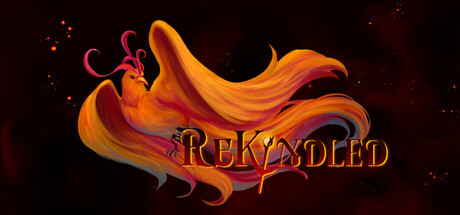

Featured Project
Rekindled
Rekindled is a spell combination game the featuring 2D characters in a 3D world, your task is to use your combinations to fight off magical creatures and open your path to the volcanic peak and awaken the long-slumbering Phoenix, so its everlasting flame may Rekindle the world again.